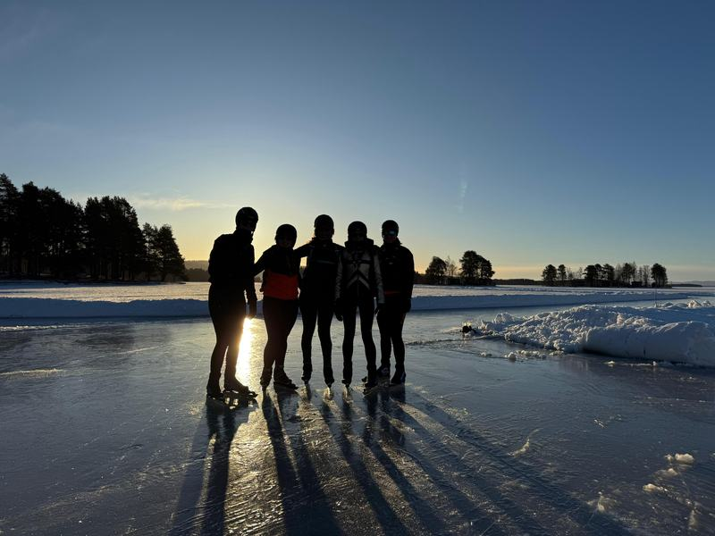
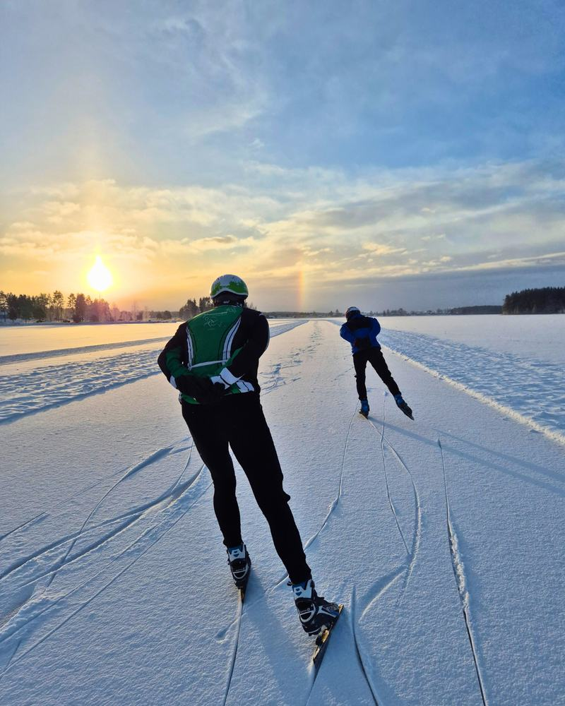
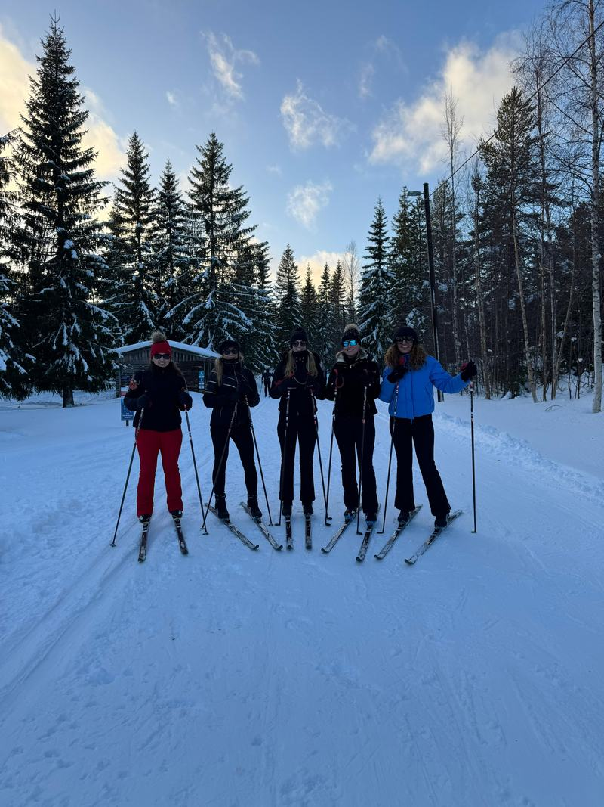
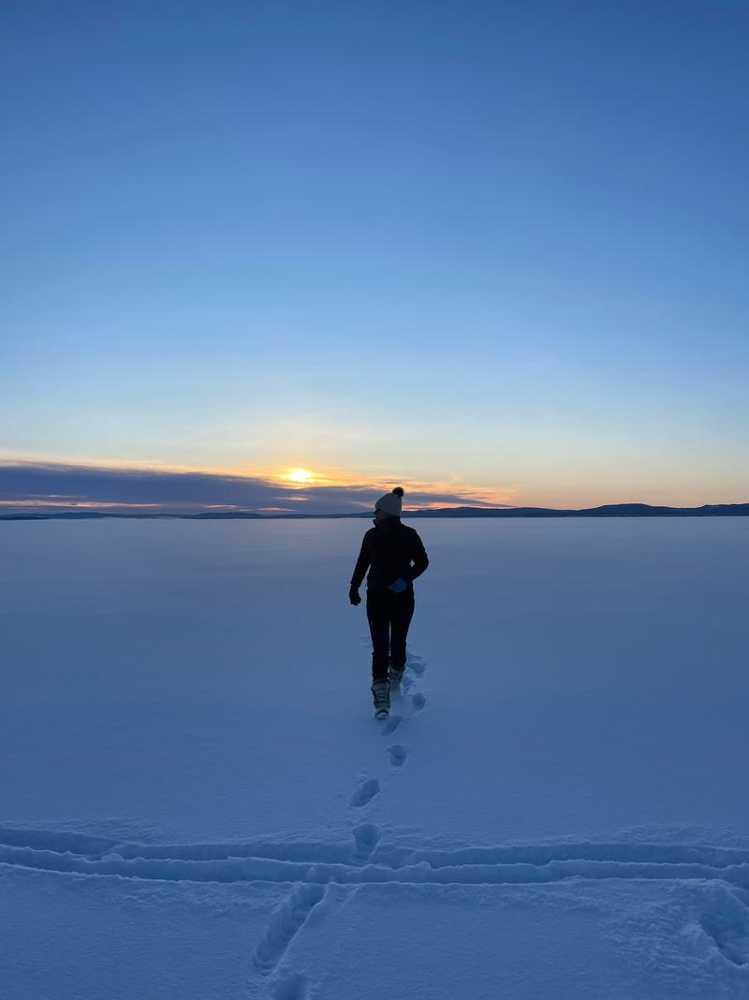
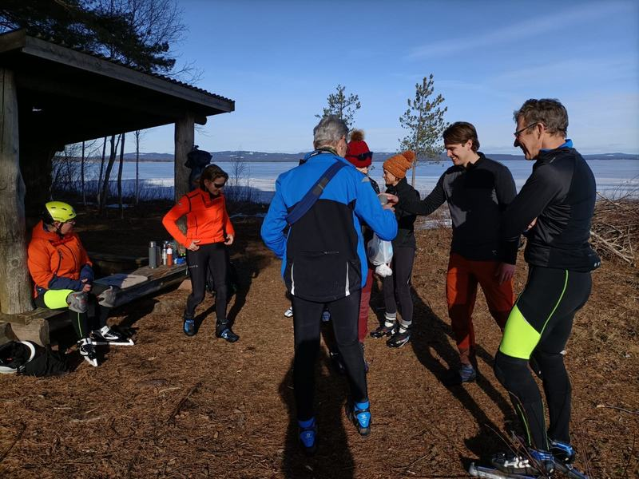
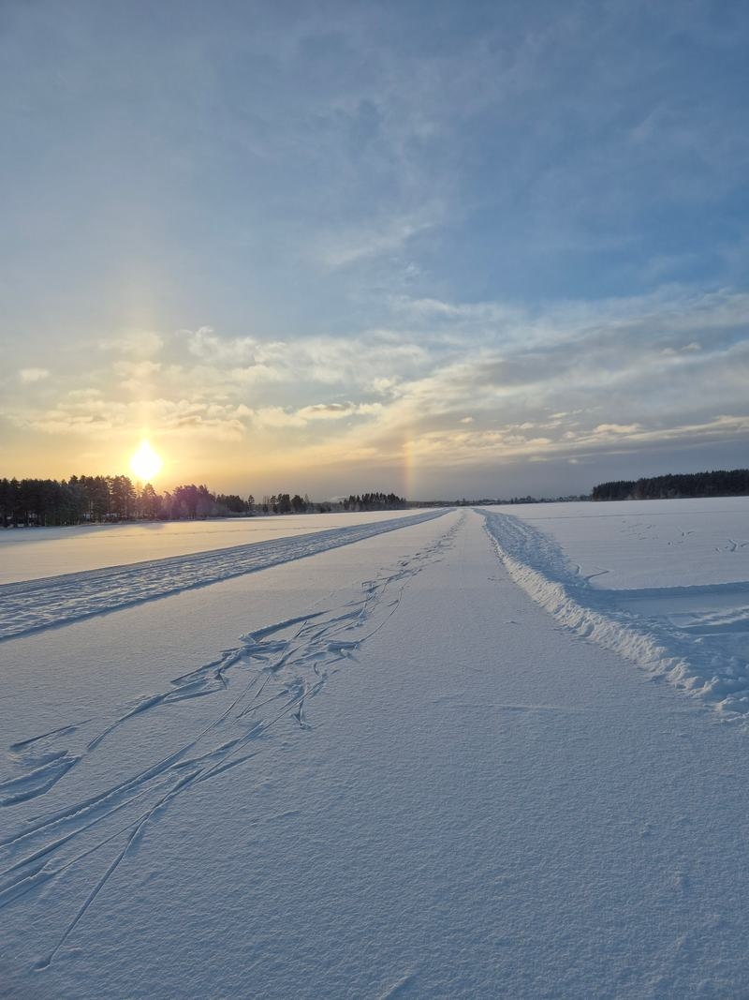

Arrival
You arrive at the cabins by Lake Orsa. Time to get your gear ready and take a first look at the ice. Through the online service you can see what the ice and the weather look like for the coming days.

A swept track of about 15 kilometres across Lake Orsa, and in the evening your own cabin a stone's throw from the ice.

A fifteen-kilometre track, swept across a frozen lake. Beyond that, there's no one.
Every winter a long track is swept on Lake Orsa in Dalarna. You skate there independently, at your own pace.
What you'll actually skate is never fixed in advance. Natural ice can't be planned: through our online service you get current information about the ice, all alternative skating locations and weather updates, so you choose each day where you skate.
That does ask something of you: you need to be able to judge for yourself whether the ice is safe.
You stay in cabins at First Camp Orsa-Dalarna. No hotel corridor, but your own place where you gather in the evening and step straight onto the ice in the morning.
The exact layout of the cabins is arranged to match the size of your travel party. Want to know more beforehand? Get in touch.






As standard, Orsa is an independent trip: no guide comes along on the ice, but you can add guidance on the ice. The flight to Sweden, the accommodation in the cabins and local transport are arranged. Through our online service you get current information about the ice, all alternative skating locations and weather updates, plus information about alternative activities and activities you can book in addition.
The flight to Sweden, the cabins and local transport are arranged.
You pay the full trip price at booking.
Current information about the ice, all alternative skating locations and weather updates.
The order is fixed, the details aren't. You decide where you skate each morning, based on the weather and the ice.
You arrive at the cabins by Lake Orsa. Time to get your gear ready and take a first look at the ice. Through the online service you can see what the ice and the weather look like for the coming days.
A relaxed start on the swept track, so you get used to the natural ice and the skates.
Every day you look at the weather and the ice quality and choose where to go. Sometimes that's the long track across the lake, sometimes you move to one of the alternative skating locations nearby. If skating isn't possible for a while, you get information about alternative activities and activities you can book in addition.
Depending on your travel time, there's often still room for one last lap around the lake in the morning before you leave.
The exact number of days depends on the departure date. Once that's fixed, the programme adjusts to match.
Not sure whether something's included? Just ask, so you know for certain.
Not as standard: the skating trip to Orsa is an independent trip, and no guide comes along on the ice. The flight, the accommodation in the cabins and local transport are arranged, and through our online service you get current information about the ice, all alternative skating locations and weather updates. That does mean you have to be able to judge for yourself whether the ice is safe. If you'd rather not go out on the ice on your own, you can add guidance on the ice: €100 per day for 1 person, + €50 per day for each additional person, for as many days as you like. Guided group trips are still being planned.
On Lake Orsa in Dalarna a long track of about 15 kilometres is swept every winter. What you actually skate is never fixed in advance: that depends on the weather and the ice quality. Through the online service you get current information about the ice, all alternative skating locations and weather updates.
You stay in your own cabins at First Camp Orsa-Dalarna, right by the ice. No hotel corridor, but a place of your own where you sit together in the evening and step straight onto the ice in the morning. We match the exact cabin arrangement to the size of your travel party.
Included are the accommodation in the cabins, the flight to Sweden, local transport, online service (current information about the ice, all alternative skating locations and weather updates) and information about alternative activities and activities you can book in addition. Not included are your own skating equipment and winter clothing, mandatory safety gear (ice picks and a helmet) and insurance.
You don't have to be a competitive skater, but you do need to be able to skate independently and in control. If you're unsure about your level, Joey will think it through with you beforehand.
That's up to you: you skate independently and plan your days yourself. How many kilometres that adds up to is never fixed in advance - that is determined by the ice, the weather and the route of that day.
As standard, Orsa is an independent trip: no guide comes along on the ice. That does ask that you can judge for yourself whether the ice is safe. If you'd rather not do that on your own, you can add guidance on the ice. Through the online service you get current information about the ice, all alternative skating locations and weather updates. Still, it remains natural ice: good preparation is part of it. Guided group trips are still being planned.
Natural ice can't be guaranteed. Through the online service you get current information about the ice, all alternative skating locations and weather updates, so you can move to other suitable ice yourself. If skating isn't possible, you get information about alternative activities and activities you can book in addition.
You bring your own skating equipment. For natural ice we recommend touring skates. You also need winter clothing you can spend a whole day outdoors in; ice picks and a helmet are mandatory.
The price starts at €995 per person for 4 days with two of you. Pick your arrival and departure day below and you'll see straight away what your period costs.
Once the calendar loads, you pick your period here and book directly. If that doesn't work, email schaatsennovakse@outlook.com or message +31 6 17467643.
Falun and Finland are independent trips too. At Falun you can also add guidance on the ice between 10 January and 20 February. You book Falun as a complete package with flight, rental car and accommodation, and you choose your own arrival day. Guided group trips are still being planned.